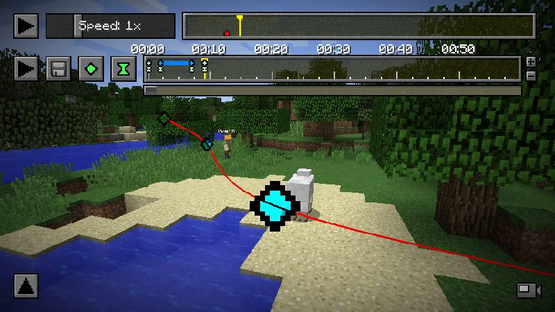
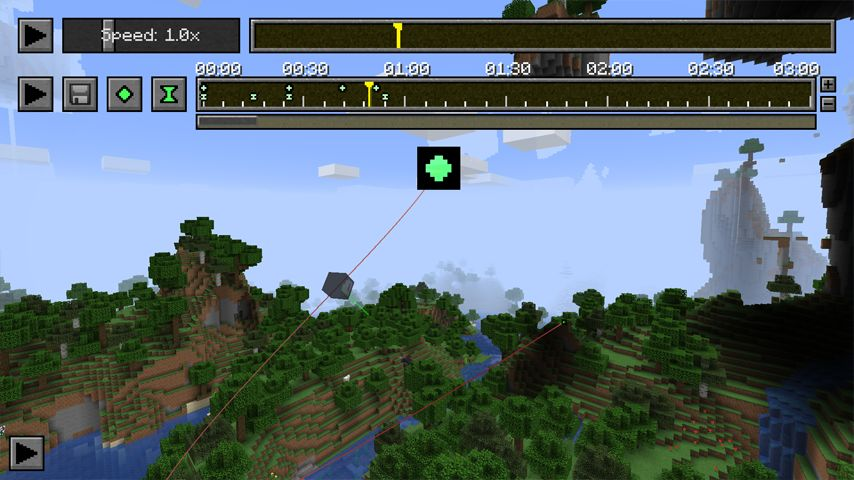

Replay Mod is one of the most popular Minecraft Java mods used by YouTubers, content creators and cinematic builders. The mod allows players to record their gameplay and then freely move the camera around the world to create amazing cinematic shots, timelapses and professional Minecraft videos. Whether you are making YouTube content, trailers, showcases or montages, Replay Mod provides powerful tools that make video creation much easier.
What Is Replay Mod?
Replay Mod records everything that happens inside your Minecraft world and saves it as a replay file. Instead of recording a normal video, you can open the replay later and move the camera anywhere you want. This allows creators to capture smooth cinematic scenes, dynamic camera angles and professional looking footage without needing multiple players or complicated setups.

Main Features
- ✔ Professional Cinematic Camera System
- ✔ Smooth Camera Paths
- ✔ High Quality Video Rendering
- ✔ Timelapse Creation Tools
- ✔ Perfect For YouTube Videos
- ✔ Record Multiplayer Gameplay
- ✔ Create Stunning Minecraft Trailers
- ✔ Easy To Use Interface
- ✔ Export Videos In High Resolution
- ✔ Used By Thousands Of Minecraft Creators
Why Creators Love Replay Mod
Replay Mod has become one of the most important tools for Minecraft content creators. Many YouTubers use Replay Mod to create smooth fly-through shots, cinematic intros, survival series showcases and professional trailers. Instead of placing multiple camera accounts inside the world, Replay Mod allows creators to record first and control the camera later. This saves time and provides much better results than traditional screen recording.
Whether you are showcasing a giant build, recording an SMP, creating a Minecraft movie or making tutorial videos, Replay Mod gives you complete control over camera movement and video presentation.

Installation Guide
1. Download Replay Mod using the button below.
2. Install the correct version for your Minecraft Java Edition.
3. Place the mod inside your Minecraft mods folder.
4. Launch Minecraft using Fabric Loader.
5. Enter a world and start recording gameplay.
6. Open the replay file later and create cinematic shots.
📥 Download Replay Mod
Create professional Minecraft cinematics, timelapses, trailers and YouTube content with Replay Mod.
Download Replay ModCredits: Replay Mod belongs to its original developers and creators. Hero Verse only provides information, reviews and access links for educational and informational purposes. All rights belong to their respective owners.